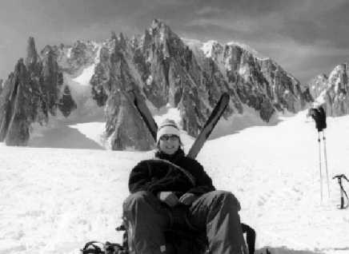
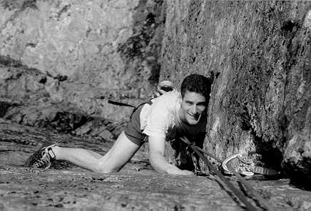

Only a hill, but all of life to me, up there, between the sunset and the sea...
WinthropeYoung
"It seems that despite our best efforts to avoid epics, when they actually happen they form the most treasured memories, and the ones we draw on for inspiration... One day soon I will go back to enjoy the exposure, hardships and pure excitement of the unknown which accompany exploration in remote areas. Anyone want to join me?" Martin Jackson's article entitled "A Good or bad day?" in the 1996 CUMC Journal. I found this quote a year later whilst flicking through the journal wondering how I was going to write my own article about my the epics I had experienced this last summer in the Alps - epics that I had shared, ironically, with Martin Jackson ....
I barely knew Martin when he asked me to climb with him that summer and perhaps if I had read his journal article a little closer I would have declined! I was extremely daunted by his five Alpine seasons and new routes in the Himalayas. I had a nightmarish vision of Martin - the mega mountain man, tying knots with Germanic efficiency, hopping up mountains and effortlessly swinging up overhangs...
Before reading on about our often hellishly epic ascents I have to admit that Martin is right, in a perverse way the worst epics make the best memories. Hopefully he and I can have many more.
(Leyla was climbing suspiciously hard rock routes last summer term. This combined with her super-fitness, convinced me that she would be ideal to drag me up some hard mountaineering routes. The questions in the back of my mind were: a) was she really up for some hard climbing? and if so b) could I keep up with her? Unsurprisingly, I suppose, the answers were yes and no respectively. Whether it was bemusement at the production of a mint from her bra (which I refused) or holding an unexpected lob, whether epic or not, I had fun. Fancy spending a day or two on the Dru 'Youth'?)
29th June 1996
We finally arrived at around nine at night in La Berade in the Ecrins massif - fully unacclimatised and unfit. Decided to climb a route on Les Bans - AD, 300m rock easy descent... sounded perfect. Unfortunately the walk in to the climb would take nine hours! Being sensible climbers we were undaunted by the task ahead and woke up at midnight and began the slog up the mountain. I remember little of those nine hours except feeling quite sick and noticing that Martin looked sicker. The last few meters up to the climb were the worst. There had been fresh snowfall and the hot sun had transformed the meters of snow into a sticky-marshmallow mess. I waded across in waist deep snow relieved to have finally reached solid rock. Except that it wasn't solid, as I later realised when several jugs neatly detached themselves from the mountain. Perhaps I had been spoilt by Chamonix granite - but this was really quite chossy. After a few hours of dubious route finding (Leyla deciding to take the more dramatic line) the summit still eluded us. Already well beyond midday and we still had at least seven hours of descending - so we decided to bail. There was a snowy couloir to the left of the climb which seemed the obvious way down. I knew that Martin's one pet hate was abseiling and I noticed how his face paled at the prospect. Unfortunately three abseils took almost three hours. Ropes jammed incessantly, and both Martin and I climbed back up several times (but I made sure that Leyla did all of the free hanging stuff). One of the many highlights was having the snow beneath me collapse as I abseiled down and I momentarily swung into a dark ice hole. Finally off the rock we trudged down the mountain. By midnight the effects of sun, dehydration and just fatigue took their toll. I kept imagining sign posts (and I was quite happy to just fall asleep by the path). The final cock up was managing to miss the campsite when we got down to La Berade village, twenty four hours after leaving!
30th June -campsite, La Berade
Today I slept, ate and slept again. Martin muttered about trying an ED route the next day only confirming my view that he was a closet madman and a true menace to any rational being. He seemed very undeterred that we had failed on an AD the day before.

Leyla in the Valle Blanche
Photo: Jasmine Minbashian

Martin on Cenotaph Corner
Photo: Dave Hollinger
1 st July -Dibona, La Berade
Started walking in to Dibona at three am. Somehow I was persuaded to try this route by promises of clean solid rock and only a four hour walk in. We were climbing on an awesome rock face following a classic -We started off up chimneys and cracks then there was a crux slab pitch which I had the luck to lead. Balanced precariously on a non-existent foot hold and mocked by the smooth slab in front of me, any attempts at ascending seemed impossible. However, somehow adrenaline (and a point of aid) defies reasoning and I carefully picked my way up the pitch leaving the strenuous traverse of the overhanging roof to Martin. I heard his jubilant cries as he reached the belay. As I struggled on to the ledge beside him, the smell of stale muesli and eggs wafted towards me:
"Sorry" said a rather sheepish Martin "I think I let one drop." Cheers! (In fact the reason for this was fear: Leyla had just let go of the rock without warning me. This is something I was soon to get used to.)
Well the route was going well and we even had the arrogance to anticipate our triumphant photo on Dibonas 2m summit. Fatal mistake. We managed to spend well over three hours climbing essentially the last two easy pitches (this time it was my turn to muck up the routefinding). By the time we reached the summit we were too tired to care about a photograph. The walk home was interminable and we managed to crawl into the tent at eleven p.m. - .html epic day.
3rd July, Ailefroide
I managed to persuade Martin to bolt clip despite his protestations that cragging was a part of his distant youth. We found a climb but unfortunately we had the crag map upside down, went to the wrong crag, failed to notice the name of the climb "La Snoopy" painted in RED at the bottom, got up five pitches to a horrible crux at which point I yelled "Mummy!" and jumped off. I was fine - Martin looked grossly disappointed at my ineptitude and silently nursed his injured hands. (The final straw came when 'youth' offered me a mint which she produced from her bra!) We abseiled off to enjoy a bit of relaxed sunbathing.
4th July, Ailefroide
I managed to trip on a root whilst walking into a crag. A blood blister dominated my big toe that redefined the meaning of sore and so my climbing exploits were temporarily suspended.
15th July, Chamonix
The Fendo Spur had appealed to both of us from the very beginning. Martin liked the fact that he could point to it from the Chamonix valley and I was drawn to the fact that objective dangers are low and there are telepheriques overhead if you ever need to yell for help...
We planned to spend a night on route, climbing the rock in the afternoon so that we could enjoy a beautiful sunset, wrapped up in sleeping bags and then tackle the snow ridge and ice pitches the next morning. Yet somehow theory and reality did not merge and yet again we managed to have a fairly epic ascent.
I suppose staying up until three am catching up with close friends wasn't the best idea (especially as she forgot to leave me the key to her room so I spent the evening sleeping in my clothes in the corridor - good bivouac training). The next morning after packing and repacking, negotiating past hordes of Japanese tourists and a relaxed lunch we finally began the climb. There was a considerable amount of snow on the rock so we kept taking crampons on and off. I was leading up a difficult section with a suspicious number of abandoned slings left on it and decided that we were off route. Unfortunately as I was down climbing I slipped and the crampons that had been happily swinging off the back of my harness were now neatly embedded in my right buttock. Not amusing at the time! Trying to forget about my perforated bottom we managed to find a way past this difficult section although it involved some tricky climbing and rucksack hauling. Having just completed the crux a jubilant Martin managed to drop the remote control for his camera. After climbing for several weeks with him I knew that his camera was far more precious to him than an living being ever could be so I resigned myself to being lowered down to pick up the remote control. I then climbed the crux AGAIN whilst swearing creatively about tacky gadgets. From this point on the evening went from bad to worse (I thought this was the best bit). We had expected to reach the bivy ledges by around five and yet they never appeared. The sun began to set, fireworks went off in the valley below and I tried to forget about my bottom. At this point I have to hand it to Martin, as I lost confidence he kept his composure, tirelessly leading up chimney after chimney. I felt very humbled as I shivered on dark bivy hedges, soaked through from the snow and hoping that Martin would find the ledges soon. We reached them by midnight well over the time we had anticipated. The only consolation was that we passed two Danish climbers a pitch before the ledges who had been on the route since seven in the morning. If we were slow what were they??? Too exhausted to eat we got to sleep at about two in the morning (after Leyla had applied some perfume!), and were rudely awakened by the Danes at four. It was a glorious dawn and as way of reconciliation for my general uselessness the day before I lead up all of the ice leaving Martin the last pitched that topped out onto Midi-Plan ridge (Leyla is a true lady). The feelings of contentment were superb and Martin proudly took a summit photo with his treasured remote control. But the excitement was not quite over yet, little did I know that later I would have the luck to have my cramponed bottom examined in Chamonix hospital by a tall and rather dashing doctor... !